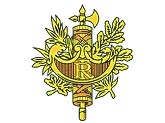
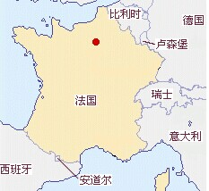

- 法国国旗
- 法国国徽
- 法国标志性建筑
- 法国地理位置
法国概况
法国位于欧洲西部
人口概况
法国全国总人口6600万（2014年1月1日），其中法国本土6390万，2013年法国人口增长率为0.4%。通用法语。居民中64%信奉天主教，3%信奉伊斯兰教，3%信奉新教，1%信奉犹太教，28%自称无宗教信仰。
法兰西民族是由多个民族混合构成的，除了主体法兰西民族外，边境地区还有阿尔萨斯、布列塔尼、巴斯克、科西嘉、佛兰芒等少数民族，大约占了总人口的7.9%。
法国经济
法国是最发达的工业国家之一，在核电、航空、航天和铁路方面居世界领先地位。钢铁、汽车、建筑为其工业的三大支柱。法国主要工业部门有矿业、冶金、汽车制造、造船、机械制造、纺织、化学、电器、动力、日常消费品、食品加工和建筑业等。核电设备能力、石油和石油加工技术居世界第二位，仅次于美国；航空和宇航工业仅次于美国和独联体，居世界第三位。钢铁工业、纺织业占世界第六位。但工业中占主导地位的仍是传统的工业部门，其中钢铁、汽车、建筑为法国工业三大支柱。
法国是仅次于美国的世界第二大农产品出口国，第三产业在法国经济中所占比重逐年上升。其中电信、信息、旅游服务和交通运输部门业务量增幅较大，服务业从业人员约占总劳动力的70%。
跟中国贸易关系
法国是中国在欧盟的第四大贸易伙伴，位于德国、荷兰、英国之后。据中国海关总署统计，2012年，中法双边贸易额510.2亿美元，同比下降2%，其中中方出口269亿美元，同比下降10.3%，进口241.2亿美元，同比增长9.3%。2013年1—9月，中法双边贸易额371.4亿美元，同比下降3.7%,其中中国方面出口198.0亿美元，同比下降2.8%，进口173.4亿美元，同比下降4.6%。
法国在中国投资主要集中在能源、汽车、化工、轻工、食品等领域，大部分为生产性企业。截至2013年8月底，法国在华投资项目4577个，实际投资金额127.7亿美元。2013年1—8月，法国在中国实际投资6亿欧元，同比增长33.3%。截至目前，中国在法国设立非金融类企业166家，投资存量38亿美元，主要投资领域为贸易、家电、旅游、化工等。2013年1—8月。中国对法国非金融类直接投资金额1.56亿美元。